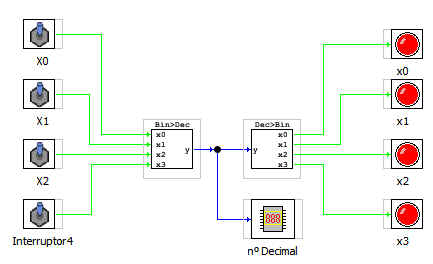

Este bloque se encarga de convertir una número entero en su equivalente en binario.
El bloque contrario es el que convierte un código de 4 bits en una salida de tipo entero.
La Entrada es de tipo int
Las salidas son: y,x1,x2,x3 de tipo boolenao
